CvPcb
Narzêdzie do przypisywania footprintów komponentom
Spis tre¶ci
- Przeznaczenie
- Ogólna charakterystyka aplikacji
- Uruchamianie CvPcb
- Obs³uga CvPcb
- Ekran g³ówny
- G³ówny pasek narzêdzi
- Konfigurowanie CvPcb bez obs³ugi tabeli bibliotek
- Wybór domy¶lnej ¶cie¿ki bibliotek footprintów
- Tabele footprintów - Zarz±dzanie bibliotekami po nowemu
- Globalna tabela bibliotek footprintów
- Lokalna tabela bibliotek footprintów zale¿na od projektu
- Konfiguracja pocz±tkowa
- Dodawanie nowych wpisów w tabeli
- Pobieranie warto¶ci ze zmiennych systemowych
- U¿ywanie wtyczki GitHub
- Przyk³adowe wpisy w tabeli
- Co robiæ z plikami w COW?
- Generalne zalecenia przy u¿ywaniu tabeli bibliotek
- Podgl±d bie¿±cego footprintu
- Przypisywanie footprintów do komponentów
- Automatyczne przypisywanie footprintów
- Pliki numeracji wstecznej
Prawa autorskie
Copyright © 2010-2014. Ten dokument jest chroniony prawem autorskim. Lista autorów znajduje siê poni¿ej.
Mo¿esz go rozpowszechniaæ oraz modyfikowaæ na zasadach okre¶lonych w GNU General Public License (http://www.gnu.org/licenses/gpl.html), wersja 3 lub pó¼niejsza, albo okre¶lonych w Creative Commons Attribution License (http://creativecommons.org/licenses/by/3.0/), wersja 3.0 lub pó¼niejsza.
Wszystkie znaki towarowe u¿yte w tym dokumencie nale¿± do ich w³a¶cicieli.
Autorzy
Jean-Pierre Charras, Wayne Stambaugh, Fabrizio Tappero, Kerusey Karyu.
Kontakt
Wszelkie komentarze lub sugestie dotycz±ce tego dokumentu prosimy kierowaæ na listê dyskusyjn± deweloperów programu KiCad: https://launchpad.net/~kicad-developers
Wersja
19 Pa¼dziernika 2014
Informacja dla u¿ytkowników komputerów Apple Macintosh
Wsparcie programu KiCad dla systemu operacyjnego Apple OS X jest w zaawansowanej fazie eksperymentalnej.
1. Przeznaczenie
CvPcb pozwala na przypisanie ka¿demu komponentowi jaki wystêpuje na li¶cie sieci stworzonej przez program do edycji schematu, nazwy footprintu, który bêdzie go reprezentowa³ na obwodzie drukowanym, a tak¿e na dodanie tych informacji do listy sieci.
Generalnie, lista sieci nie okre¶la który footprint (fizyczne odzwierciedlenie komponentu) bêdzie wy¶wietlany przez oprogramowanie do edycji obwodu drukowanego (Pcbnew) podczas tworzenia p³ytki.
Komponenty mog± mieæ manualnie przypisane footprinty. Mo¿na te¿ utworzyæ skrypty przypisañ (ang: equivalence files), które stanowi± specyficzn± bazê danych dla przypisywania komponentom ich footprintów. Je¶li dostêpne s± skrypty przypisañ, jest równie¿ mo¿liwa praca automatyczna.
Lista footprintów dostêpnych dla oprogramowania PCB przechowywana jest w bibliotekach footprintów, których mo¿e byæ wiêcej ni¿ jedna.
Ten interaktywny proces jest znacznie prostszy ni¿ bezpo¶rednie przypisywanie tych informacji z poziomu schematu, poniewa¿ pozwala na jego automatyzacjê. CvPcb pozwala tak¿e na przegl±danie list dostêpnych footprintów oraz podgl±d ich wygl±du na ekranie.
2. Ogólna charakterystyka aplikacji
Charakterystyka aplikacji
Aplikacja s³u¿y do interaktywnego lub automatycznego - w oparciu o pliki skryptów - przypisywania komponentom ich footprintów.
Tworzenie (je¶li zachodzi taka potrzeba) plików numeracji wstecznej (ang: back-annotation files) dla edytora schematów z tymi przypisaniami.
Pliki wej¶ciowe
- Pliki listy sieci
*.nettworzone przez program Eeschema (z lub bez odno¶ników do footprintów), - Zewnêtrzne skrypty przypisañ footprintów
*.cmpstworzone wcze¶niej przez CvPcb, je¶li istniej±.
Pliki wyj¶ciowe
S± generowane dwa pliki dla Pcbnew:
- Rozszerzony plik z list± sieci (z odno¶nikami do footprintów),
- Zewnêtrzny skrypt przypisañ (.cmp).
3. Uruchamianie CvPcb
CvPcb mo¿na uruchomiæ z poziomu schematu (plik o tej nazwie jest wybierany po naci¶niêciu klawisza CvPcb, z poziomu menu) lub wsadowo poprzez wpisanie z konsoli polecenia: cvpcb <filename>, (filename to nazwa pliku z list± sieci pochodz±ca z narzêdzia do edycji schematów Eeschema).
Nazwa pliku mo¿e zostaæ przekazana jako plik z rozszerzeniem lub bez. Rozszerzenie pliku mo¿e, je¶li jest potrzebne zostaæ dostarczone przez zdefiniowan± w CvPcb konfiguracjê.
Dwa tworzone pliki bêd± posiadaæ t± sam± nazwê (ale z innym rozszerzeniem).
Domy¶lnym rozszerzeniem pliku wej¶ciowego jest .net. Domy¶lnym rozszerzeniem pliku wyj¶ciowego równie¿ jest .net, i zastêpuje poprzedni plik .net.
Standardowym rozszerzeniem pliku zewnêtrznego skryptu przypisañ do przypisywania footprintów poszczególnym symbolom na schemacie (tak¿e generowanym przez CvPcb) jest .cmp.
4. Obs³uga CvPcb
Ekran g³ówny
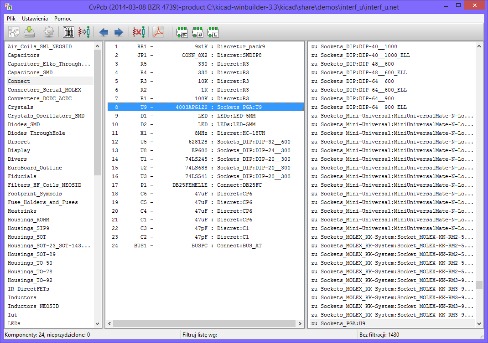
Panel listy bibliotek (z lewej strony) zawiera listê dostêpnych w projekcie bibliotek. Panel ten wspó³pracuje z opcj± filtrowaniem wed³ug bibliotek.
Panel komponentów (w ¶rodku) zawiera listê komponentów odczytanych z listy sieci.
Panel footprintów (z prawej strony) zawiera listê modu³ów odczytanych z dostêpnych bibliotek. Zawarto¶æ tej listy mo¿e byæ filtrowana.
G³ówny pasek narzêdzi

Znaczenie poszczególnych przycisków jest nastêpuj±ce:
| Wybiera listê sieci, która ma byæ przetworzona. | |
Tworzy skrypt przypisañ komponentów .cmp oraz plik .net, czyli zmodyfikowan±, rozszerzon± listê sieci. |
|
| Uruchamia menu konfiguracji CvPcb. | |
| 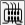 | Wy¶wietla bie¿±cy footprint (czyli ten który obecnie jest wskazany na li¶cie dostêpnych footprintów). |
| 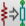 | Automatycznie przypisuje nazwy footprintów korzystaj±c z baz danych .equ o przypisaniach automatycznych.U¿ycie tego narzêdzia domy¶lnie przyjmuje, ¿e te pliki s± dostêpne. |
| Automatycznie przeskakuje do poprzedniego elementu, któremu jeszcze nie zosta³ przypisany ¿aden footprint. | |
| Automatycznie przeskakuje do nastêpnego elementu, któremu jeszcze nie zosta³ przypisany ¿aden footprint. | |
| Kasuje wszystkie przypisania. | |
| Wy¶wietla dokumentacjê footprintu, je¶li istnieje. | |
| Prze³±cznik poszczególnych filtrów s³u¿±cych do filtrowania listy dostêpnych footprintów na panelu footprintów. Mo¿liwa jest filtracja wed³ug wzorców ustawionych w ustawieniach poszczególnych komponentów (pierwsza opcja), liczby wyprowadzeñ (druga opcja) oraz wed³ug wybranej biblioteki (ostatnia opcja). Opcje te mo¿na ³±czyæ. Gdy filtrowanie jest w³±czone, panel footprintów zawiera tylko elementy pasuj±ce do sumy wybranych filtrów. |
Konfigurowanie CvPcb bez obs³ugi tabeli bibliotek
G³ówne okno
Uruchomienie menu konfiguracji powoduje otwarcie nastêpuj±cego okna dialogowego:
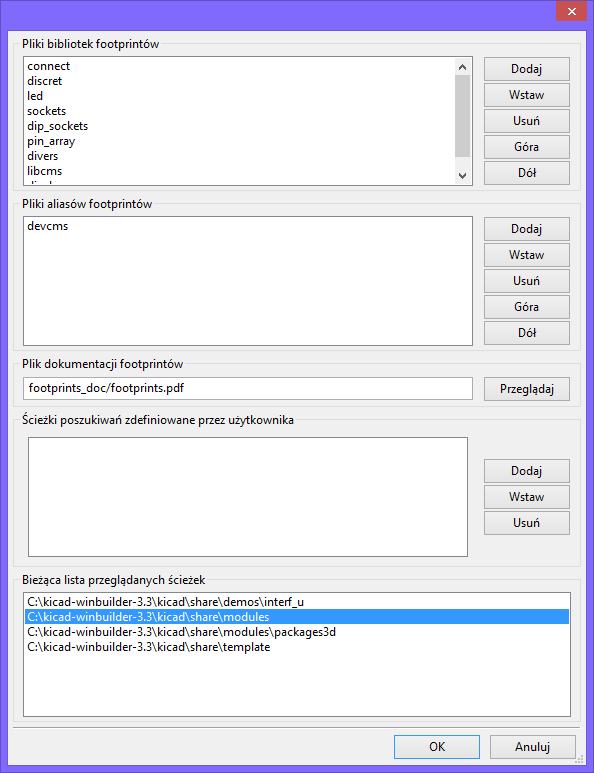
Wybór bibliotek footprintów
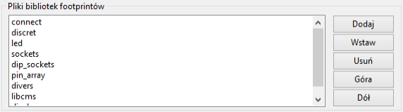
Po wybraniu elementu z listy za pomoc± myszy:
- Dodaj - dodaje now± bibliotekê do listy na koñcu listy.
- Wstaw - dodaje now± bibliotekê do listy przed aktualnie wybranym elementem.
- Usuñ - usuwa wskazan± bibliotekê z listy.
- Góra - przesuwa wybran± bibliotekê wy¿ej na li¶cie (zwiêksza priorytet).
- Dó³ - przesuwa wybrany bibliotekê ni¿ej na li¶cie (zmniejsza priorytet).
Zapamiêtaj:
Dowolna modyfikacja tej listy przenosi siê do Pcbnew.
Wybór plików aliasów footprintów (skrypty przypisañ)
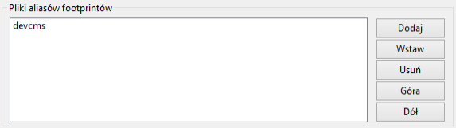
Po wybraniu nazwy pliku z listy:
- Dodaj - dodaje now± nazwê do listy na koñcu listy.
- Wstaw - dodaje now± nazwê do listy przed aktualnie wybranym elementem.
- Usuñ - usuwa wskazany element z listy.
- Góra - przesuwa wybrany element wy¿ej na li¶cie (zwiêksza priorytet).
- Dó³ - przesuwa wybrany element ni¿ej na li¶cie (zmniejsza priorytet).
Wybór domy¶lnej ¶cie¿ki bibliotek footprintów
Domy¶lna ¶cie¿ka do bibliotek jest wy¶wietlana przez CvPcb. CvPcb u¿ywa tych ¶cie¿ek do odnajdywania bibliotek footprintów (pliki .mod) oraz skryptów przypisañ (pliki .equ).
¦cie¿ki poszukiwañ
CvPcb u¿ywa dwóch typów ¶cie¿ek:
- ¦cie¿ki ustawiane automatycznie przez CvPcb.
- ¦cie¿ki dodane przez u¿ytkownika.
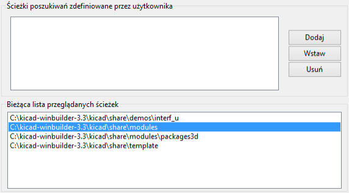
¦cie¿ki u¿ytkownika
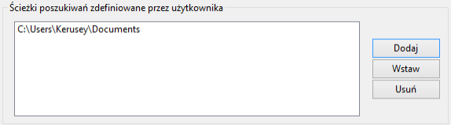
¦cie¿ki ustalane automatycznie przez CvPcb
Zale¿± one (czê¶ciowo) od systemu operacyjnego. Zawsze wystêpuje na li¶cie katalog roboczy.
Nastêpnie:
kicad/share/modules.kicad/share/modules/packages3d(dla obiektów 3D w formacie VRML stworzonych przez Wings3D).kicad/share/template.
¦cie¿ka g³ówna programu KiCad to:
- ¦cie¿ka gdzie znaleziono pliki binarne programu KiCad (
.../kicad/bin).
Je¶li nie znaleziono:
W systemie Windows:
c:\kicadd:\kicad
W systemach Linux/Unix:
/usr/local/kicad/usr/share/kicad
Tabele footprintów - Zarz±dzanie bibliotekami po nowemu
Pocz±wszy od wersji z dnia 2013-12-08 BZR4535-product, CvPcb nie u¿ywa narzêdzia do konfiguracji opisanego w poprzednim punkcie. Nowa implementacja tego narzêdzia opiera siê na tabeli bibliotek footprintów.
Poni¿szy rysunek pokazuje okno dialogowe z wspomnian± tabel±. Aby go wywo³aæ nale¿y u¿yæ polecenia Tabela bibliotek.
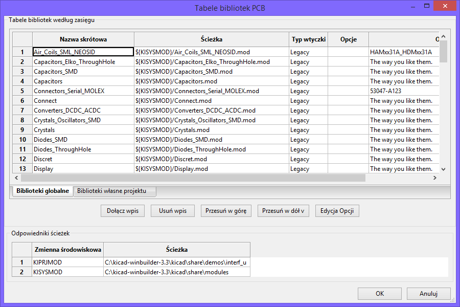
Tabela bibliotek footprintów jest u¿ywana do mapowania plików bibliotek obs³ugiwanych przez program do ich nazw skrótowych. Nazwa skrótowa jest u¿ywana do wyszukiwania footprintów zamiast poprzedniej metody z wyszukiwaniem plików zgodnie z ustalonym uk³adem ¶cie¿ek dostêpu. Pozwala to programowi CvPcb na dostêp do footprintów za pomoc± tej samej nazwy w ró¿nych bibliotekach gwarantuj±c tym samym, ¿e w³a¶ciwy footprint zostanie za³adowany z odpowiedniej biblioteki. Pozwala to równie¿ na obs³ugê bibliotek pochodz±cych z innych programów (z pomoc± wtyczek) EDA, takich jak np. Eagle czy gEDA.
Globalna tabela bibliotek footprintów
Globalna tabela bibliotek footprintów zawiera listê biblioteki, które s± dostêpne zawsze, niezale¿nie od obecnie wczytanego projektu. Tabela ta jest zapisana w pliku fp-lib-table w katalogu domowym u¿ytkownika. Jego rzeczywista lokacja zale¿y u¿ytego systemu operacyjnego.
Lokalna tabela bibliotek footprintów zale¿na od projektu
Lokalna tabela bibliotek footprintów zale¿na od projektu zawiera listê bibliotek, które s± dostêpne wy³±cznie w obecnie wczytanym projekcie. Lokalna tabela mo¿e byæ modyfikowana tylko wtedy, gdy zostanie ona za³adowana razem z list± sieci tego projektu. Gdy projekt nie zosta³ za³adowany lub gdy taka lokalna tabela nie istnieje, tworzona jest pusta tabela, któr± bêdzie mo¿na wype³niæ i pó¼niej zapisaæ razem z plikiem przypisañ footprintów (z rozszerzeniem .cmp).
Konfiguracja pocz±tkowa
Gdy CvPcb lub Pcbnew zostanie uruchomiony i globalna tabela bibliotek fp-lib-table nie zostanie znaleziona w katalogu domowym u¿ytkownika, CvPcb bêdzie próbowa³ skopiowaæ domy¶ln± tabelê bibliotek fp_global_table zapisan± w folderze template do pliku fp-lib-table w katalogu domowym u¿ytkownika. Je¶li plik fp_global_table nie zosta³ znaleziony, to zamiast operacji kopiowania zostanie utworzona pusta tabela. Gdyby taka sytuacja mia³a miejsce u¿ytkownik ma te¿ mo¿liwo¶æ skopiowania fp_global_table samodzielnie lub "rêczne" skonfigurowania tabeli.
Domy¶lna tabela bibliotek zawiera wszystkie standardowe biblioteki jakie zosta³y zainstalowane razem z programem KiCad EDA Suite.
Dodawanie nowych wpisów w tabeli
By móc u¿ywaæ biblioteki najpierw nale¿y dodaæ globaln± lub lokaln± tabelê. Lokalna tabela ma zastosowanie tylko gdy istnieje otwarta lista sieci projektu.
Ka¿da pozycja tabeli musi posiadaæ unikaln± nazwê skrótow±. Nie musi ona mieæ jakiegokolwiek zwi±zku z bie¿±c± nazw± pliku lub ¶cie¿ki do niego. Znak dwukropka ':' nie mo¿e byæ u¿ywany w nazwach skrótowych. Ka¿da pozycja musi równie¿ odnosiæ siê do prawid³owej ¶cie¿ki/nazwy pliku w zale¿no¶ci od typu biblioteki. ¦cie¿ki do plików mog± byæ bezpo¶rednie, wzglêdne lub pochodziæ ze specjalnych zmiennych systemowych - opisanych dalej.
Aby biblioteka zosta³a wczytana przez CvPcb musi byæ tak¿e wybrana w³a¶ciwa wtyczka obs³uguj±ca dany format pliku. CvPcb obecnie wspiera nastêpuj±ce formaty plików bibliotek: KiCad Legacy, KiCad Pretty, Eagle oraz gEDA.
Istnieje równie¿ pole przeznaczone do wpisania opisu dla danego wpisu w tabeli. Pole z opcjami nie jest w tej chwili u¿ywane, zatem umieszczanie jakichkolwiek opcji nie ma znaczenia przy ³adowaniu bibliotek.
Proszê zauwa¿yæ, ¿e nie mo¿na umie¶ciæ dwóch takich samych nazw skrótowych w jednej tabeli. Jednak¿e, mo¿na wpisaæ t± sam± nazwê skrótow± w globalnej i lokalnej tabeli bibliotek, poniewa¿ tabela lokalna ma wiêkszy priorytet ni¿ tabela globalna w takim przypadku.
Gdy wpisy zostan± zdefiniowane w lokalnej tabeli bibliotek, to plik fp-lib-table zawieraj±cy te wpisy zostanie umieszczony w folderze sk±d pochodzi lista sieci.
Pobieranie warto¶ci ze zmiennych systemowych
Jednym z najwiêkszych zalet tabeli bibliotek footprintów jest mo¿liwo¶æ u¿ywania odno¶ników do zmiennych systemowych. Pozwala to na zdefiniowanie w³asnych ¶cie¿ek do bibliotek w zmiennych systemowych i u¿ywanie ich w projektach.
Odno¶niki do zmiennych systemowych mo¿na wplataæ w tre¶æ pól zawieraj±cych ¶cie¿kê do pliku u¿ywaj±c powszechnie znanego formatu ${nazwa_zmiennej}. Domy¶lnie CvPcb definiuje zmienn± ¶rodowiskow± KISYSMOD. Wskazuje ona na miejsce, gdzie zainstalowane zosta³y biblioteki instalowane razem z programem KiCad EDA Suite. Mo¿na j± re-definiowaæ samodzielnie, co pozwala na zast±pienie standardowych bibliotek ich w³asnymi odpowiednikami. Gdy wczytana zostanie lista sieci, CvPcb automatycznie definiuje równie¿ zmienn± KIPRJMOD. Pozwala to na tworzenie bibliotek w miejscu wskazywanym przez projekt bez konieczno¶ci definiowania bezwzglêdnej ¶cie¿ki do biblioteki w lokalnej tabeli footprintów projektu.
U¿ywanie wtyczki GitHub
GitHub to specjalna wtyczka pozwalaj±ca na ³±czenie siê ze zdalnym repozytorium GitHub zawieraj±cym footprinty w formacie .pretty (nowa wersja formatu zapisu footprintów przez program KiCad). Repozytorium to jest tylko do odczytu, ale wtyczka umo¿liwia równie¿ dostêp do technologi "Copy On Write" (COW) wspieraj±cej mo¿liwo¶æ edycji footpritnów odczytanych z repozytorium GitHub i zapisanie ich nowych wersji na dysku lokalnym, które pó¼niej mo¿na wys³aæ z w celu ich aktualizacji. Sama wtyczka nie umo¿liwia zapisu do repozytorium.
By dodaæ wpis GitHub do tabeli bibliotek, pole ¦cie¿ka musi zostaæ wype³niona wa¿nym adresem URL do repozytorium GitHub.
Przyk³adowo:
https://github.com/liftoff-sr/pretty_footprints
Zwykle poprawna ¶cie¿ka URL jest tworzona wg nastêpuj±cego schematu:
https://github.com/nazwa_u¿ytkownika/nazwa_repozytorium
Pole Typ Wtyczki musi byæ ustawione jako Github. Aby w³±czyæ funkcjê "Copy On Write" nale¿y w polu Opcje dodaæ parametr allow_pretty_writing_to_this_dir który zawiera³ bêdzie ¶cie¿kê na dysku lokalnym gdzie zapisywane bêd± pliki z modyfikacjami. Je¶li ta opcja zostanie pominiêta to biblioteka GitHub jest tylko do odczytu.
Footprinty tam zapisane s± po³±czeniem czê¶ci tylko do odczytu repozytorium GitHub i tre¶ci lokalnych zmian by utworzyæ zmodyfikowan± bibliotekê footprintów. Ka¿da modyfikacja biblioteki GitHub bêdzie trafiaæ do tej lokalnej biblioteki hybrydowej COW umieszczonej w odpowiednim folderze *.pretty.
Nale¿y w tym miejscu nadmieniæ, i¿ czê¶æ rezydentna COW pochodz±ca z repozytorium GitHub jest zawsze tylko do odczytu, co oznacza, ¿e nie mo¿na niczego samodzielnie usun±æ lub zmodyfikowaæ bezpo¶rednio w samym repozytorium GitHub. Niezale¿nie czy biblioteka bêdzie hybrydowa, czyli po³±czona z lokalnej czê¶ci tylko do odczytu i zapisu, czy tylko czê¶æ zdaln± przeznaczon± tylko do odczytu, bêdzie ona dalej zwana bibliotek± "Github" w dalszych rozwa¿aniach.
Przyk³adowe wpisy w tabeli
Poni¿sza tabela pokazuje wpis z tabeli bibliotek, której nie zosta³a przypisana opcja allow_pretty_writing_to_this_dir:
| Nazwa skrótowa | ¦cie¿ka | Typ wtyczki | Opcje | Opis |
| github | https://github.com/liftoff-sr/pretty_footprints | Github | Liftoff's GH footprints |
Nastêpna tabela pokazuje wpis z tabeli bibliotek z opcj± dotycz±c± COW. Zmienna ${HOME} jest tylko przyk³adowa. Folder github.pretty jest umieszczony w folderze do którego prowadzi ¶cie¿ka ${HOME}/pretty/. W ka¿dym przypadku u¿ycia opcji allow_pretty_writing_to_this_dir, wymagane jest samodzielne utworzenie tego folderu i musi on posiadaæ rozszerzenie .pretty.
| Nazwa skrótowa | ¦cie¿ka | Typ wtyczki | Opcje | Opis |
| github | https://github.com/liftoff-sr/pretty_footprints | Github | allow_pretty_writing_to_this_dir=${HOME}/pretty/github.pretty | Liftoff's GH footprints |
Footprinty pobierane z repozytorium maj± zawsze pierwszeñstwo przed tymi umieszczonymi w folderze na który wskazuje opcja allow_pretty_writing_to_this_dir. Po zapisaniu footprintu do lokalnego folderu przechowuj±cego hybrydowe pliki COW, np. poprzez zapisanie zmian w edytorze footprintów, ¿adne aktualizacje GitHub nie bêd± widoczne podczas ³adowania footprintów o tej samej nazwie, ni¿ te, które zosta³y zapisane lokalnie.
Zawsze nale¿y korzystaæ z odrêbnego folderu *.pretty dla poszczególnych bibliotek GitHub i nigdy nie powinno siê ³±czyæ folderów przez przypisywanie tego samego folderu do innych bibliotek GitHub, gdy¿ mog³oby to doprowadziæ do ba³aganu nad którym nie by³oby mo¿na zapanowaæ.
Warto¶ci symboliczne w zmiennych systemowych zapisane w notacji ${nazwa_zmiennej} przypisane do opcji allow_pretty_writing_to_this_dir bêd± rozwijane automatycznie by utworzyæ w³a¶ciw± ¶cie¿kê, tak samo jak to ma miejsce w polu ¦cie¿ka.
Co robiæ z plikami w COW?
System COW to element przy¶pieszaj±cy wspó³u¿ytkowanie footprintów. Je¶li zawarto¶æ COW bêdzie regularnie przesy³ana do zarz±dcy repozytorium GitHub, bêdzie mo¿na pomóc w uaktualnianiu kopii znajduj±cych siê w repozytorium zdalnym.
Ca³o¶æ jest bardzo prosta. Za pomoc± poczty elektronicznej nale¿y wys³aæ pliki *.kicad_mod znajduj±ce siê w folderach systemu COW do osoby zarz±dzaj±cej repozytorium. Po otrzymaniu potwierdzenia, ¿e zmiany zosta³y zaakceptowane i wprowadzone, mo¿na skasowaæ wys³ane pliki z COW. Nowe wersje plików zostan± pobrane z repozytorium GitHub.
G³ównym celem jest utrzymywanie jak najmniejszego zestawu plików systemu COW jak tylko jest to mo¿liwe poprzez regularne przesy³anie zawartych w niej plików.
Generalne zalecenia przy u¿ywaniu tabeli bibliotek
Biblioteki footprintów mog± byæ zdefiniowane globalne lub lokalnie dla obecnie wczytanego projektu. Biblioteki umieszczone w globalnej tabeli bibliotek u¿ytkownika s± zawsze dostêpne i s± zapisane w pliku fp-lib-table w katalogu domowym u¿ytkownika. Globalne biblioteki bêd± dostêpne nawet je¶li nie zosta³a otwarta lista sieci danego projektu. Inaczej sprawa siê ma w przypadku lokalnych bibliotek, które s± aktywne wy³±cznie dla bie¿±cej listy sieci. Lokalna tabela bibliotek jest zapisywana w pliku fp-lib-table umieszczonym w tej samej ¶cie¿ce co lista sieci.
Nie ma przeszkód co do definiowania odno¶ników do bibliotek w obu tabelach. Dlatego te¿ nie zosta³o odgórnie okre¶lone w jaki sposób u¿ytkownik bêdzie wykorzystywa³ mo¿liwo¶ci jakie daj± globalne i lokalne tabele. S± jednak zalety i wady ka¿dego z rozwi±zañ, które nale¿y rozwa¿yæ.
Mo¿na zdefiniowaæ wszystkie biblioteki w globalnej tabeli bibliotek, co oznacza, ¿e bêd± one zawsze dostêpne gdy bêd± potrzebne. Wad± takiego rozwi±zania bêdzie szybko¶æ wyszukiwania w nich odpowiedniego footprintu.
Mo¿na zdefiniowaæ wszystkie biblioteki w lokalnej tabeli bibliotek. Zalet± takiego rozwi±zania bêdzie mo¿liwo¶æ zdefiniowania tylko tych bibliotek, które bêd± w danej chwili potrzebne oraz skrócenie czasu ich przeszukiwania. Wad± tego rozwi±zania bêdzie za¶ to, ¿e bêdzie trzeba zawsze pamiêtaæ, by dodaæ odpowiednie biblioteki dla ka¿dego nowego projektu.
Mo¿na zdefiniowaæ biblioteki w obu tabelach jednocze¶nie. Sensowne staje siê wtedy wpisanie bibliotek, które s± wykorzystywane prawie we wszystkich projektach do tabeli globalnej, a w lokalnych tabelach umieszczaæ tylko te, które s± przydatne tylko w tym konkretnym projekcie. Bêdzie to rozwi±zanie, które bêdzie posiada³o najwiêksz± elastyczno¶æ kosztem zmniejszenia szybko¶ci wyszukiwania.
Podgl±d bie¿±cego footprintu
Polecenie Podgl±d footprintu pozwala na wy¶wietlenie bie¿±cego footprintu, czyli tego który aktualnie jest wskazany na li¶cie w panelu footprintów.
Mo¿na przegl±daæ w ten sposób listê footprintów klikaj±c na ich nazwy przy pozostawionym oknie podgl±du footprintów.
Mo¿na równie¿ podgl±daæ widok 3D (je¶li modu³y maja przypisane kszta³ty 3D).
Wy¶wietlanie
Pozycja kursora jest wy¶wietlana na dolnym pasku ekranu:
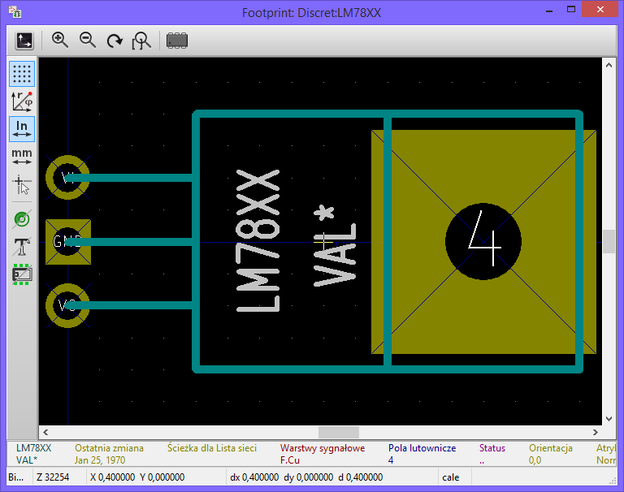
Pozycja absolutna (X nnnn Y nnnn) oraz relatywna (dx nnnn dy nnnn). Punkt odniesienia dla pozycji relatywnej mo¿na zmieniaæ klawiszem spacji.
Skróty klawiaturowe
| F1 | Przybli¿enie |
| F2 | Oddalenie |
| F3 | Od¶wie¿a obraz |
| <spacja> | Ustawia punkt odniesienia |
Menu kontekstowe
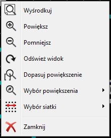
Wy¶wietlane jest klikaj±c prawy klawisz myszy. Pierwsze cztery polecenia s³u¿± do bezpo¶redniego dostosowywania powiêkszenia. Dwa kolejne wy¶wietlaj± dodatkowe podmenu:
| Wybór powiêkszenia | Ustawienie wybranego wspó³czynnika powiêkszenia z listy dostêpnych. |
| Wybór siatki | Wybór ustawienia skoku siatki z listy dostêpnych. |
Pasek narzêdzi
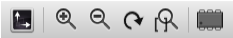
| Opcje wy¶wietlania | |
| Opcje powiêkszania | |
| Wy¶wietlanie kszta³tów 3D |
Podgl±d 3D
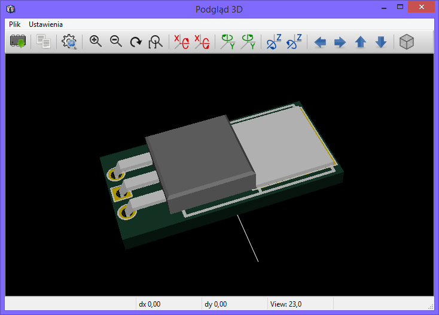
5. Przypisywanie footprintów do komponentów
Podstawy
Aby przypisaæ wybranemu komponentowi (pod¶wietlony element) z panelu komponentów okre¶lony footprint, nale¿y w panelu footprintów dwukrotnie klikn±æ nazwê wybranego footprintu.
Nastêpny komponent z listy komponentów jest pod¶wietlany:
- Automatycznie po poprzednim przypisaniu.
- Rêcznie z pomoc± myszy lub klawiszy kursora.
Operacja przypisywania
Wystarczy klikn±æ dwukrotnie lewym klawiszem myszy na wybranym footprincie.
Zmiana bie¿±cego przypisania
Jest wykonywana na zasadzie nowego przypisania, jak wy¿ej.
Filtrowanie listy footprintów
Polecenia z paska narzêdzi pozwalaj± na w³±czenie/wy³±czenie poszczególnych sposobów filtracji. Poszczególne filtry mo¿na w³±czaæ niezale¿nie by bardziej zawêziæ wynik filtracji.
Mo¿liwa jest filtracja wed³ug wzorców ustawionych w ustawieniach poszczególnych komponentów (pierwsza ikona), liczby wyprowadzeñ (druga ikona) oraz wed³ug wybranej biblioteki (ostatnia ikona).
Je¶li nie ma ustalonej filtracji wy¶wietlana jest pe³na lista footprintów. Poni¿szy rysunek ukazuje przyk³ad listy bez filtracji:
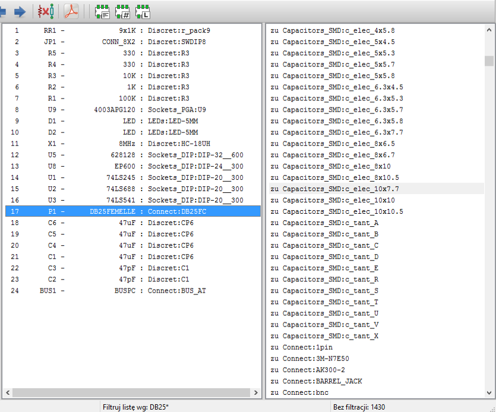
Filtrowanie za pomoc± wzorców z ustawieñ komponentów
Je¶li wybrany komponent posiada zdefiniowane wzorce nazw dozwolonych footprintów, lista footprintów w CvPcb mo¿e byæ wed³ug niej filtrowana.
Po w³±czeniu filtracji wed³ug pasuj±cych nazw lista footprintów ulegnie znacznemu skróceniu. W tym konkretnym przypadku wy¶wietlonych zostanie tylko 8 footprintów:
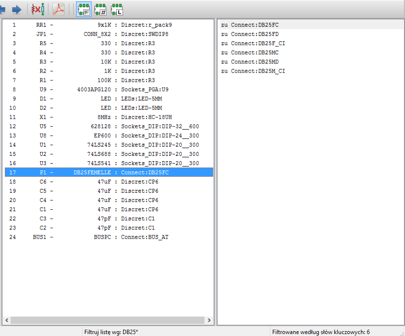
Dzieje siê tak, gdy¿ w Eeschema podczas tworzeniu symbolu zosta³y uzupe³nione informacje o dozwolonych footprintach dla tego komponentu w zak³adce Filtr footprintów:
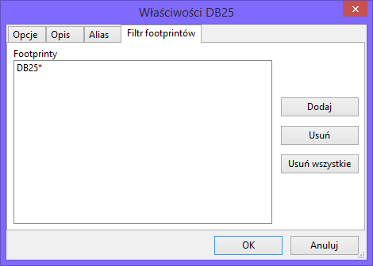
Filtrowanie za pomoc± pasuj±cej liczby wyprowadzeñ
W przypadku w³±czenia filtracji wed³ug liczby wyprowadzeñ, widok prawego panelu zmieni siê i zostan± wy¶wietlone tylko te footprinty, które posiadaj± odpowiedni± liczbê wyprowadzeñ (tu: 9).
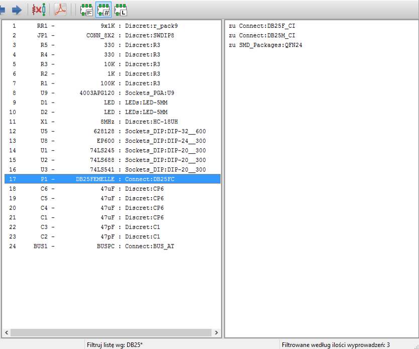
Filtrowanie za pomoc± wybranej biblioteki
W przypadku w³±czenia filtracji wed³ug wybranej biblioteki, widok prawego panelu bêdzie podobny i zostan± wy¶wietlone tylko te footprinty, które pochodz± z wybranej w panelu bibliotek biblioteki.
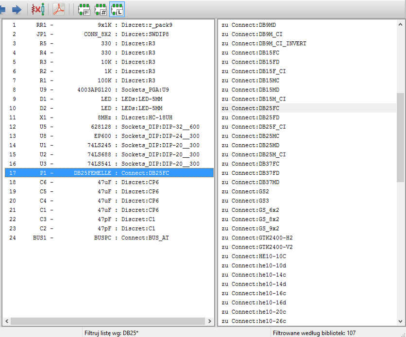
6. Automatyczne przypisywanie footprintów
Pliki aliasów footprintów
Pliki te pozwalaj± na proces automatycznego przypisywania footprintów.
Pobierane s± z nich nazwy footprintów na podstawie warto¶ci (pole Value) komponentów.
Pliki te maj± standardowe rozszerzenie .equ
Po wybraniu odpowiedniego pliku w zale¿no¶ci od przeznaczenia projektu, mo¿na w prosty sposób dostosowywaæ technologiê jego wykonania, np. wersja SMD, wersja THT...
Zobacz te¿ Wybór plików aliasów footprintów (skryptów przypisañ).
Format plików
Pliki .equ zawieraj± zwyk³y tekst, gdzie ka¿da linia odpowiada jednemu komponentowi.
Ka¿da z linii posiada strukturê:
'component value' 'footprint name'
Ka¿da nazwa musi byæ zamkniêta w apostrofach, obie nazwy musz± byæ rozdzielone przynajmniej jednym znakiem spacji.
Przyk³adowo:
Je¶li element U3 to uk³ad scalony 14011 a jego odpowiedni footprint to 14DIP300, to linia powinna wygl±daæ tak:
'14011' '14DIP300'
Linie rozpoczynaj±ce siê od znaku hash (#) s± traktowane jako komentarz.
Przyk³adowa zawarto¶æ pliku:
#integrated circuits (smd):
'74LV14' 'SO14E'
'74HCT541M' 'SO20L'
'EL7242C' 'SO8E'
'DS1302N' 'SO8E'
'XRC3064' 'VQFP44'
'LM324N' 'S014E'
'LT3430' 'SSOP17'
'LM358' 'SO8E'
'LTC1878' 'MSOP8'
'24LC512I/SM' 'SO8E'
'LM2903M' 'SO8E'
'LT1129_SO8' 'SO8E'
'LT1129CS8-3.3' 'SO8E'
'LT1129CS8' 'SO8E'
'LM358M' 'SO8E'
'TL7702BID' 'SO8E'
'TL7702BCD' 'SO8E'
'U2270B' 'SO16E'
#Xilinx
'XC3S400PQ208' 'PQFP208'
'XCR3128-VQ100' 'VQFP100'
'XCF08P' 'BGA48'
#upro
'MCF5213-LQFP100' 'VQFP100'
#regulators
'LP2985LV' 'SOT23-5'
Przypisywanie automatyczne
Proces automatycznego przypisywania jest uruchamiany przez wybranie ikony:
Wszystkie komponenty jakie zosta³y znalezione (na podstawie ich warto¶ci) w pliku .equ bêd± mia³y przypisany automatycznie wskazany tam footprint.
7. Pliki numeracji wstecznej
Pliki te mog± byæ u¿yte do przeprowadzenia procesu numeracji wstecznej na schemacie. Nie s± one u¿ywane przez Pcbnew.
Zawieraj± zwyk³y tekst, gdzie ka¿da linia odpowiada jednemu komponentowi, podaj±c nazwê komponentu (identyfikator) na schemacie i przypisany jemu footprint.
Przyk³adowo:
Je¶li komponentowi oznaczonemu jako U3 zosta³ przypisany footprint 14DIP300, to wygenerowana linia bêdzie zawieraæ tekst:
comp "U3" = footprint "14DIP300"
Utworzony plik bêdzie siê nazywa³ tak samo jak plik wej¶ciowy CvPcb, ale z rozszerzeniem .stf, i zostanie umieszczony w tym samym folderze gdzie zostanie wygenerowana nowa lista sieci.